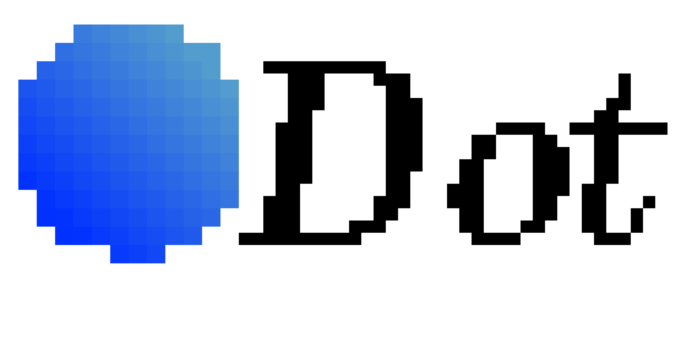

Upload documents
Loading...

Answers may not be accurate, please consider checking important information.
Doc Dot
Doc Dot
Chat and interact with your documents
Big Dot
Chat freely about anything!
Switch to light / dark version